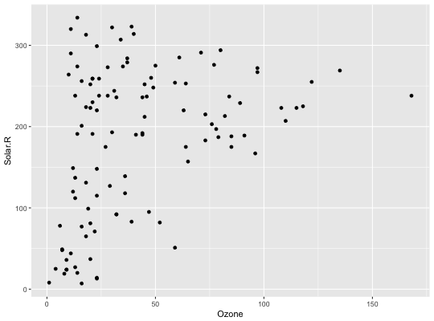
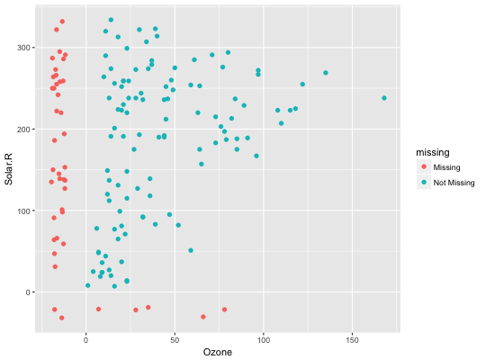

geom_missing_point adds a point geometry for displaying missingness.
geom_missing_point(mapping = NULL, data = NULL, position = "identity", colour = ..missing.., na.rm = FALSE, show.legend = NA, inherit.aes = TRUE, ...)
aes
or aes_. If specified and inherit.aes = TRUE
(the default), is combined with the default mapping at the top level of the
plot. You only need to supply mapping if there isn't a mapping defined for
the plot.FALSE (the default), removes missing values with a
warning. If TRUE silently removes missing values.NA, the default, includes if any aesthetics are mapped. FALSE
never includes, and TRUE always includes.FALSE, overrides the default aesthetics, rather
than combining with them. This is most useful for helper functions that
define both data and aesthetics and shouldn't inherit behaviour from the
default plot specification, e.g. borders.layer. There
are three types of arguments you can use here:
color = "red" or size = 3.
stat associated with the layer.
Warning message if na.rm = T is supplied.
library(ggplot2) library(naniar) # using regular geom_point() ggplot(airquality, aes(x = Ozone, y = Solar.R)) + geom_point()#> Warning: Removed 42 rows containing missing values (geom_point).# using geom_missing_point() ggplot(airquality, aes(x = Ozone, y = Solar.R)) + geom_missing_point()